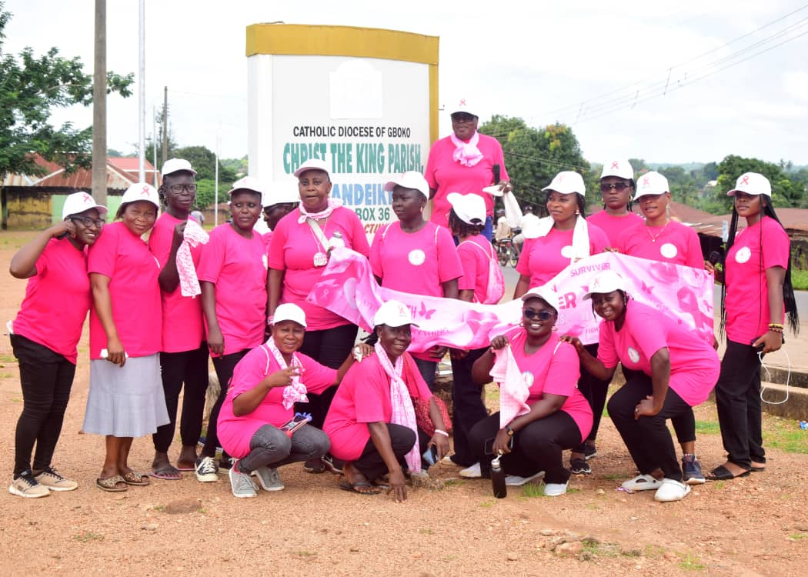
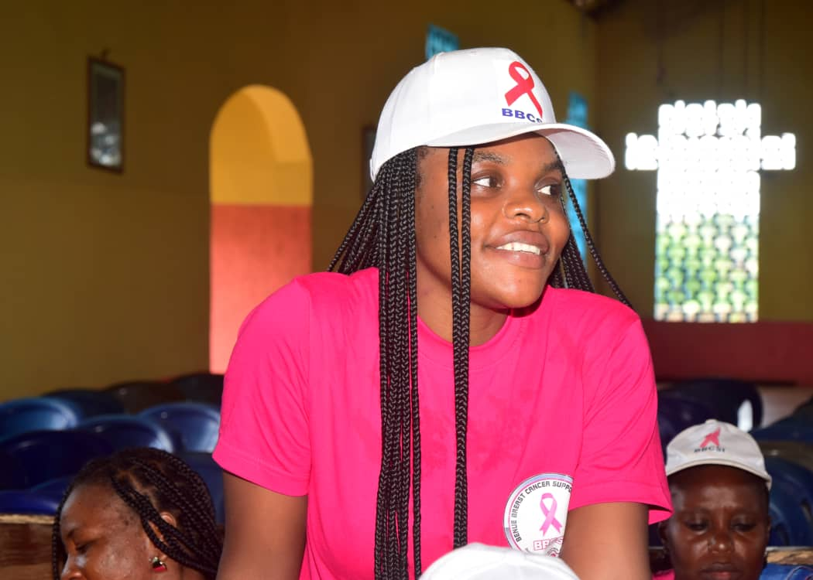

BBCSI Takes Cancer Awareness Campaign to Vandeikya
"Cancer Is No Longer a Death Sentence"
Published: 3 November 2025 · Author: Mr. Terpase Jeiyol, Media Aide to the Chairman, BBCSI

The Benue Breast Cancer Support Initiative (BBCSI), a Benue State based NGO whose major aim is to enlighten the public on how the scourge can be taken care of from the moment it is detected in one's body to living as a survivor, took their enlightenment campaign to Vandeikya, the headquarters of Vandeikya LGA, recently.
Founder's Message: Breaking the Culture of Silence
Speaking at Christ the King Church where the awareness campaign was held, the founder of BBCSI, Professor (Emerita) Stevina Evuleocha-Ugbah stressed that the programme was meant to save lives as it breaks the culture of silence surrounding breast cancer, dispels myths and encourages men and women to take charge of their health.
"Together, the narrative in our communities can be changed from fear to hope."
Professor Evuleocha-Ugbah said, by sharing information on breast cancer, the hope of early detection, healing and a future where no woman faces breast cancer alone is assured. The US trained and based Professor of Marketing and Entrepreneurship appreciated volunteers, partners, health professionals and survivors who continue to inspire the NGO with their courage to participate in the enlightenment campaigns.
She also called on them to remain united in purpose by spreading the knowledge, supporting those in need and standing firm in love and solidarity. The founder, who was represented by the Chairperson of BBCSI, Mrs. Mngohol Tion, thanked Christ the King Church, Vandeikya LGC Chairman, the Ter Kunav and donors for supporting their work and making the event possible.

Expert Medical Insights
Dr. Terkula Wombo
Medical Director, General Hospital, Vandeikya (Guest Speaker)
Dr. Wombo described cancer as an abnormal malignant growth in the breast of women and outlined the key aspects of understanding, detecting, and treating the disease.
Risk Factors
- Genetics
- Gene mutation
- Obesity
- Hormone replacement therapy
Warning Signs
- Appearance of a lump
- Change in breast shape
- Nipple discharge
- Shrinking and reddening
Diagnosis Methods
The disease can be diagnosed through self and clinical breast examinations, mammography, ultrasound scan, and biopsy, depending on the stage.
Treatment Options
Prevention is Better Than Cure
Dr. Wombo emphasized these preventive measures:
- Early medical consultation
- Maintenance of a healthy lifestyle
- Regular mammography scanning at age 40 and above
- Monthly self breast examinations
Community Support & Solidarity
HRH Mrs. Betty Achiaku
Wife of Ter Kunav
The Royal Mother thanked BBCSI for carrying the campaign to her area of jurisdiction and noted that the numerous responses from the participants were indications that they have understood the enlightenment campaign. She encouraged the practice of early detection methods as the way forward, emphasizing that prevention was better than cure.
Hon. Dennis Terkula Guda
Chairman, Vandeikya LGC (represented by Hon. Mrs. Rachael Akur, Supervisory Councilor for Health and Human Services)
The Chairman expressed his solid support for the enlightenment campaign and pledged to do all he can to ensure its success in his domain.

Voices from the Community
Most of the participants, including Mama Nancy Agule, Mrs. Dorcas Akur, and Mr. Bemtor Akaayar, among others, separately thanked the BBCSI for bringing the enlightenment campaign to their doorstep and promised to use the opportunity to further enlighten others.
A Warm Welcome
Earlier, in his address of welcome, the Priest-in-Charge of Christ the King Parish, Vandeikya and Dean of Vandeikya Deaconry, Rev. Fr. Emmanuel Nyitar, who was represented by his assistant, Rev. Fr. Justin Iorkongusu, thanked BBCSI for the wonderful work they were doing, expressing hope that patients will no longer die of cancer due to ignorance.
Together, We Can Make a Difference
Join BBCSI in the fight against breast cancer. Early detection saves lives.
Get Involved Today